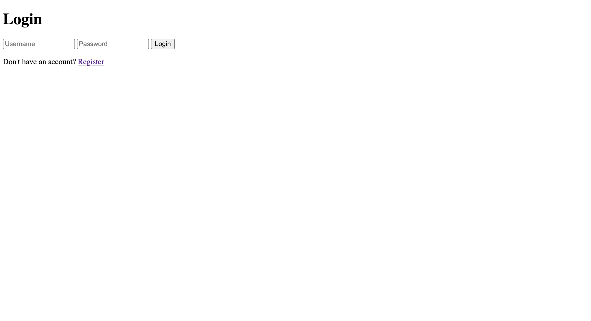
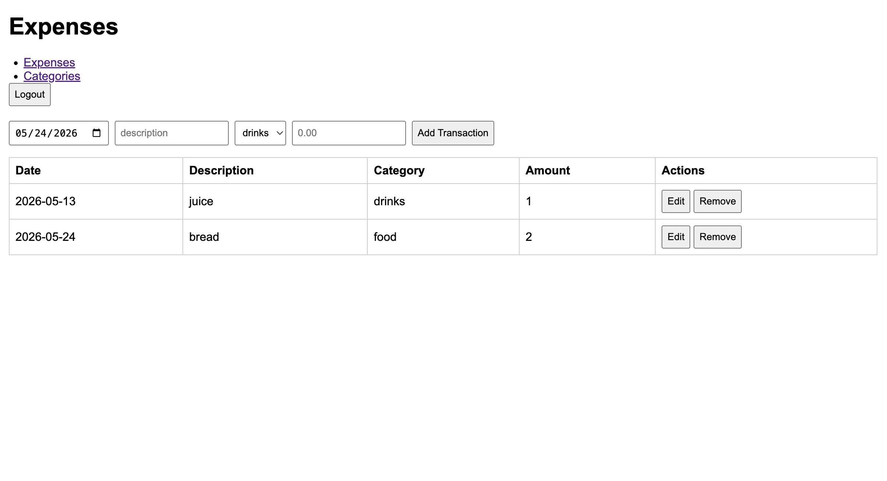
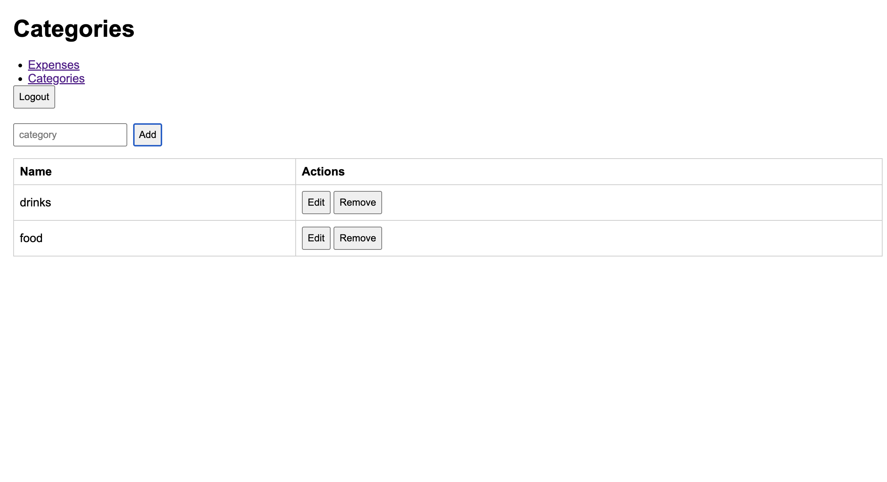

Full-stack project
Expense Tracker Web App
This is a full-stack coursework project that helps users track personal expenses by category. The app includes user registration and login, password hashing, token-based access, category management, and expense records that belong to the logged-in user. It was built with a JavaScript frontend, a custom Node.js backend, and a MySQL database.

Problem and Objective
Many people need a simple way to track their spending without using a complicated finance app. The objective of this project was to build a practical app with clear user flows for registering, logging in, adding expenses, viewing records, organizing categories, and managing user-specific data.
Technical Implementation
The project uses a JavaScript frontend, a custom Node.js backend, and a MySQL database. The backend includes REST API routes for users, categories, and expenses. The app also uses bcrypt for password hashing, JWT tokens for login, and Vitest for unit testing.
Challenges and Solutions
One of the main challenges was adding multiple-user support so each user could have their own expenses and categories. The solution was to add registration and login, hash passwords with bcrypt, create JWT tokens after login, and use backend checks so each user could only access their own records.
Results and Impact
The current version supports user registration, login, password hashing, token-based access, user-specific categories, and expense management.
This project helped me practice how the frontend, backend, database, authentication, and tests work together in a full-stack web app. It also helped me understand what frameworks do behind the scenes because the backend was built with custom Node.js logic instead of backend frameworks.
Project Screenshots
These screenshots show the main user flow: registering or logging in, managing expenses, and organizing categories.
Login / Registration

Expense Tracker Page

Categories Page

Code Snippet
This snippet shows part of the user registration and login logic. Passwords are hashed with bcrypt before being stored, and a JWT token is created after a successful login.
async addUser(username, password) {
if (!username || username.trim().length == 0) {
throw new Error('Username must not be empty');
}
if (!password || password.length == 0) {
throw new Error('Password must not be empty');
}
const passwordHash = await bcrypt.hash(password, 10);
const result = await this.db.insertUser(username, passwordHash);
return result.insertId;
}
async loginUser(req, res) {
try {
const user = await this.reqParser(req);
await this.usersState.verifyUser(user.username, user.password);
const token = jwt.sign(
{ username: user.username },
process.env.JWT_SECRET
);
this.resCreator(200, { token: token }, res);
} catch (err) {
this.resCreator(err.statusCode || 500, { error: err.message }, res);
}
}Future Enhancements
Future improvements include improving the visual design, filtering expenses by month or category, and implementing session cookies for login sessions.